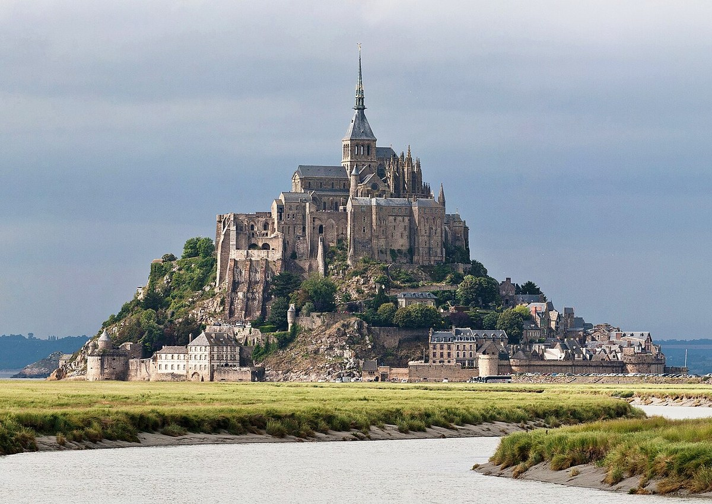
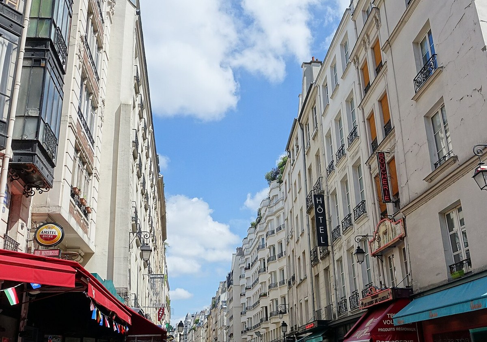
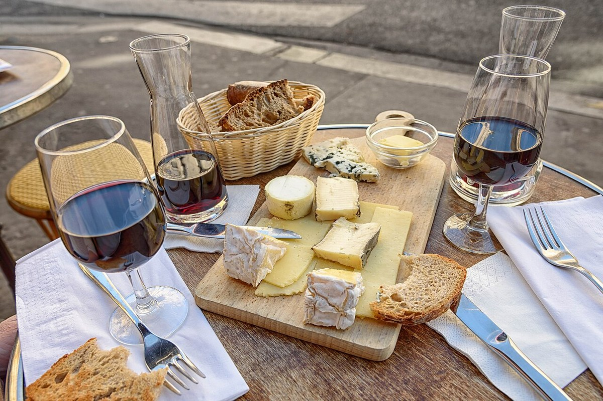

Worum geht es?
Frankreich ist eines der bekanntesten Länder der Welt und steckt trotzdem voller Überraschungen. In diesem Projekt erklären wir Frankreich geografisch und schauen hinter die Klischees, die man mit dem Land verbindet. Das machen wir aus drei Blickwinkeln: Naturraum (A), Bevölkerung (B) und Kultur (E). Am Ende führt alles auf eine interaktive Karte, auf der man Frankreich Ort für Ort entdecken kann.
„Wie lässt sich Frankreich geografisch erklären, und wann wird aus einer Besonderheit ein Stereotyp über ein ganzes Land?“

Bereich A · Naturraum
Lage, Gebirge, Flüsse und zwei Küsten. Wie formt die Landschaft das Leben der Menschen, und welche Klischees entstehen daraus?

Bereich B · Bevölkerung
68 Millionen Menschen, Altersstruktur, Sprachen und Migration. Wie verteilt sich die Bevölkerung zwischen Paris und der „Diagonale der Leere“?

Bereich E · Kultur
Kultur, Alltag, Baguette und Streik, dazu die Methode der Raumanalyse. Wann wird aus einer Besonderheit ein Stereotyp?
Orientierung: Frankreich im Überblick
Hier siehst du Frankreich mit seinen Grenzen, Nachbarländern, wichtigen Städten und den großen Landschaften auf einen Blick:
Wie sieht die Landschaft aus?
- Hohe Gebirge im Osten und Süden: die Alpen mit dem Mont Blanc, dem höchsten Berg Westeuropas, und die Pyrenäen an der Grenze zu Spanien.
- In der Mitte das Zentralmassiv, ein altes, teils vulkanisches Bergland mit erloschenen Vulkanen und Hochebenen.
- Im Norden und Westen große, flache und fruchtbare Ebenen, zum Beispiel das Pariser Becken, wo viel Landwirtschaft betrieben wird.
- Lange Flüsse durchziehen das Land: die Loire als längster Fluss, die Seine durch Paris, die Rhône zum Mittelmeer und die Garonne im Südwesten.
- Im Südosten liegt die Mittelmeerinsel Korsika, deren Berge direkt aus dem Meer aufsteigen.
So unterscheiden sich die Regionen deutlich: der regnerische, raue Westen, der warme, trockene Süden am Mittelmeer, der kühlere Norden mit viel Landwirtschaft und die kalten, schneereichen Hochgebirge.
Bedeutung von Klima & Naturraum fürs Leben
Küsten
- Atlantikküste im Westen: rau, mit starken Gezeiten und breiten Stränden.
- Ärmelkanalküste im Norden: Steilküsten und wichtige Häfen.
- Mittelmeerküste im Süden: mild und sonnig, mit Badeorten wie an der Côte d’Azur.
Raumanalyse: Die Mittelmeerküste
- Wo?An der Mittelmeerküste im Süden, zum Beispiel an der Côte d’Azur um Nizza.
- Was?Viele Badeorte, Ferienhäuser und Touristen.
- Warum dort?Das Mittelmeerklima ist mild und sonnig, das Meer ist warm, und Küste und Berge liegen nah beieinander.
- Folgen?Der Tourismus ist wichtig für die Wirtschaft. Im Sommer sind die Orte voll, und Wohnen am Meer ist teuer.
- Wandel?Durch den Klimawandel wird es heißer und trockener, mit mehr Hitze und Waldbränden.
„So entsteht das Bild von Frankreich als sonnigem Urlaubsland.“
Stereotypen-Check: Landschaft
Bevölkerung & Altersstruktur
(< 20 Jahre)
(20 bis 64 Jahre)
(65+ Jahre)
- Einwohner: rund 68 Millionen.
- Dicht besiedelt: Großraum Paris (über 12 Millionen) und die Küsten.
- Dünn besiedelt: die „Diagonale der Leere“ von Nordosten bis zu den Pyrenäen.
- Große Städte: Paris, Marseille, Lyon, Toulouse, Nizza, Bordeaux, Straßburg, Lille, Nantes.
- Geburtenrate: früher eine der höheren in Europa, heute niedriger. Die Bevölkerung wird älter.
- Sprachen: Amtssprache Französisch, dazu Regionalsprachen wie Bretonisch, Okzitanisch, Elsässisch, Baskisch und Korsisch.
Raumanalyse: Verteilung der Bevölkerung
- Wo?In ganz Frankreich, vor allem im Großraum Paris und an den Küsten.
- Was?Paris ist riesig und das Zentrum für Arbeit und Kultur. Dagegen gibt es die „Diagonale der Leere“, einen breiten Streifen von den Ardennen bis in die Pyrenäen mit sehr wenigen Menschen.
- Warum dort?Paris war historisch immer das politische und wirtschaftliche Zentrum. Fabriken, Ministerien und Universitäten sind dort gewachsen. In den Bergen und im ländlichen Raum gab es weniger Arbeit.
- Folgen?Wohnen in Paris ist sehr teuer und der Verkehr voll. Auf dem Land schließen Bahnhöfe, Schulen und Arztpraxen.
- Wandel?Mehr Menschen ziehen in kleinere Großstädte wie Rennes, Nantes oder Bordeaux. Schnelle Züge (TGV) verbinden diese Städte schnell mit Paris.
Stadt und Land
Rund 8 von 10 Menschen leben in Städten. Dort gibt es Arbeit, Schulen, Ärzte und guten Verkehr. Auf dem Land sind mehr Platz und Natur, aber Geschäfte, Schulen und Arztpraxen werden immer weniger.
Bevölkerungsgruppen
Frankreich ist seit langem ein Einwanderungsland. Viele Menschen haben Wurzeln in Nordafrika (zum Beispiel Algerien und Marokko), in Westafrika und in Südeuropa (zum Beispiel Portugal und Italien). Offizielle Statistiken nach Herkunft oder Religion gibt es nicht, weil Frankreich das bewusst nicht erfasst.
Regionale Unterschiede
Der reiche Großraum Paris unterscheidet sich stark vom ländlichen Zentrum. Der Norden ist eher von Industrie geprägt, der Süden vom Tourismus. Die Überseegebiete liegen klimatisch und kulturell ganz anders.
Stereotypen-Check: Die Menschen
Landesweite Kulturthemen
Drei weitere Klischees im Check
Baguette & Esskultur
- Reale Erscheinung:Das Baguette gehört wirklich zum Alltag und ist seit 2022 UNESCO-Kulturerbe.
- Entstehung:Es wurde im 19. Jahrhundert bekannt, vermutlich durch einen Wiener Bäcker, und galt bald als typisch französisch.
- In Medien und Werbung:Auf Fotos, Postkarten und in Filmen trägt „der Franzose“ Baguette und Baskenmütze.
- Verallgemeinert:Als würden alle Franzosen nur und ständig Baguette essen.
- Passt nicht ins Bild:Der Konsum ist stark gesunken, viele essen auch Fast Food, und die Baskenmütze trägt kaum noch jemand.
Streikkultur
- Reale Erscheinung:Es gibt wirklich eine starke Protest- und Streiktradition.
- Entstehung:Seit der Revolution 1789 gilt „auf die Straße gehen“ als Recht, dazu frühe Arbeiterkämpfe wie die der Weber in Lyon.
- In Medien:Nachrichten zeigen vor allem große Proteste wie die Gelbwesten.
- Verallgemeinert:Als stünde ganz Frankreich ständig still.
- Passt nicht ins Bild:Meist streiken nur einzelne Branchen, und viele Menschen streiken nie.
Stadt der Liebe / Romantik
- Reale Erscheinung:Paris hat viele schöne Orte, und Frankreich wird oft mit Romantik verbunden.
- Entstehung:Dichter, Maler und später Hollywood-Filme machten Paris zur „Stadt der Liebe“; Mode und Parfüm verstärkten das Bild.
- In Medien, Tourismus oder Werbung:Filme, Serien und Reisewerbung zeigen Paris fast nur mit Eiffelturm, Verliebten und Sonnenuntergang.
- Verallgemeinert:Als wäre ganz Frankreich ein romantischer Postkartenort.
- Passt nicht ins Bild:Der normale Alltag mit Arbeit, vollen Metros und Vororten; es gibt sogar das „Paris-Syndrom“, wenn Touristen enttäuscht sind.
Kulturelle Besonderheiten
Sprache und Mehrsprachigkeit
Ab dem 17. Jahrhundert setzte der Zentralstaat Hochfranzösisch durch; die Académie française (1635) wachte über die Sprache.
Regionalsprachen wie Bretonisch, Okzitanisch, Elsässisch, Baskisch und Korsisch wurden nur noch zu Hause gesprochen, später kamen Einwanderersprachen dazu.
Hochfranzösisch überall, Regionalsprachen an den Rändern des Landes, Einwanderersprachen vor allem in den Großstädten.
Regionalsprachen werden in zweisprachigen Schulen wiederbelebt, und Einwanderersprachen fließen in die Alltagssprache ein.
Feste und Feiertage
Der 14. Juli erinnert an die Revolution 1789; christliche Feiertage stammen aus der katholischen Tradition.
Militärparade und Feuerwerk am Nationalfeiertag, dazu regionale Feste und die Fête de la Musique.
Der 14. Juli landesweit, regionale Feste nur an bestimmten Orten wie das Zitronenfest in Menton.
Feste stärken den Zusammenhalt und ziehen viele Touristen an; moderne Feste wie die Fête de la Musique wurden weltweit übernommen.
Traditionen und Bräuche
Die Esskultur ist über Generationen gewachsen und seit 2010 UNESCO-Kulturerbe.
Täglich frisches Baguette vom Bäcker, lange gemeinsame Mahlzeiten und Boule (Pétanque) auf Dorfplätzen.
In Dörfern, Kleinstädten und Großstädten, oft auf öffentlichen Plätzen und in Bäckereien.
Supermärkte machen Konkurrenz, doch frisches Baguette und Boule bleiben feste Rituale.
Jugendkultur
Ab den 1980er Jahren entstand in den multikulturellen Vororten (banlieues) eine neue Jugendkultur.
Französischer Rap, die Jugendsprache Verlan, Gaming und Streetwear.
Vor allem in den Vororten von Paris, Marseille und Lyon, heute digital im ganzen Land.
Aus der früheren Randkultur ist die führende Popkultur geworden; französischer Rap dominiert die Charts.
Wann wird aus einer Besonderheit ein Stereotyp?
Ein Stereotyp entsteht, wenn etwas, das nur in einer Region oder zu einer bestimmten Zeit stimmt, auf das ganze Land übertragen wird und im Kopf hängen bleibt.
Überraschung
„Das hätten wir vorher nicht gedacht: In Kinshasa in der Demokratischen Republik Kongo sprechen mehr Menschen Französisch als in Paris. Bis 2050 wird die große Mehrheit aller Französischsprecher in Afrika leben – die Zukunft der Sprache liegt also nicht in Frankreich.“